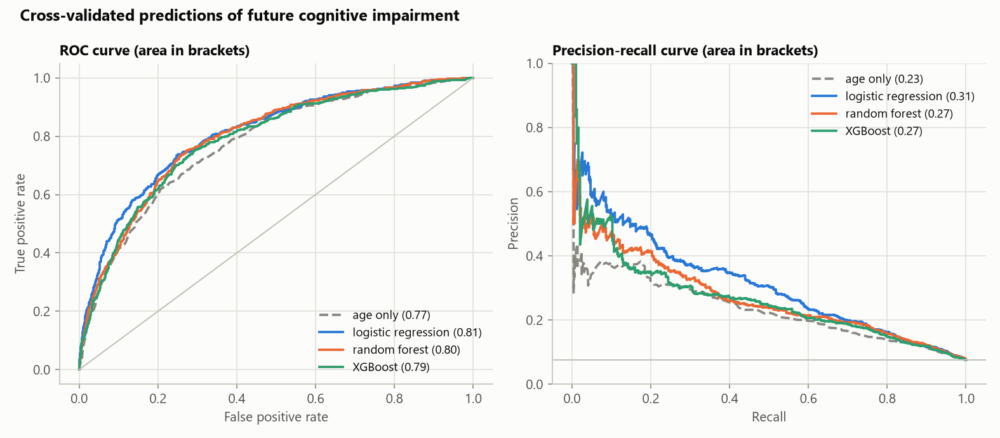
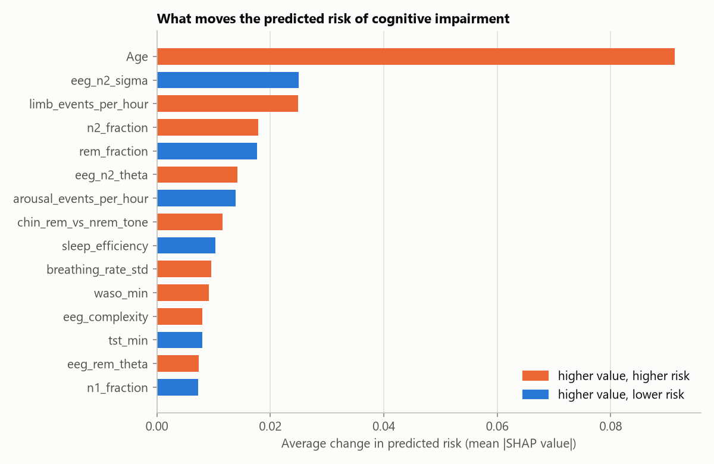

AI-based prediction of cognitive impairment from overnight polysomnography
Dementia and milder cognitive impairment develop slowly, and are usually diagnosed only once memory problems are obvious. Sleep changes early in this process. This project asks one question: can an AI read a single night's sleep recording and tell who is more likely to develop cognitive impairment later, beyond what age alone tells us?
1. Background
What is polysomnography?
Polysomnography (PSG) is the overnight sleep study done in a hospital sleep lab. Sensors record many body signals at the same time, which is why it is called multimodal:
| Signal | Sensor | What it tells us |
|---|---|---|
| EEG | Electrodes on the scalp | Brain activity, and so which stage of sleep the person is in |
| EOG | Electrodes beside the eyes | Eye movements, which mark REM (dreaming) sleep |
| Chin EMG | Electrodes on the chin | Muscle tone, which normally drops almost to zero in REM |
| Leg EMG | Electrodes on the legs | Limb movements during sleep |
| ECG | Electrodes on the chest | Heart rate and heart rate variability |
| Airflow and effort belts | Nasal sensor, chest and belly belts | Breathing, and pauses in breathing (apnoea) |
| SpO2 | Finger clip | Blood oxygen level |
Sleep stages
A sleep expert splits the night into 30-second windows called epochs and gives each one a stage: W (awake), N1 (drowsy, very light sleep), N2 (light sleep, marked by short bursts of brain activity called sleep spindles), N3 (deep slow-wave sleep) and REM (dreaming sleep). The resulting graph of stage against time is called a hypnogram. Scoring one night by hand takes a trained technician 1–2 hours.
Why sleep and the brain are linked
- Memory: sleep spindles in N2 and slow waves in N3 are involved in moving the day's memories into long-term storage.
- Clearing waste: during deep sleep the brain clears waste proteins, including amyloid, which builds up in Alzheimer's disease.
- Early warning signs: people who later develop dementia often show less REM sleep, fewer spindles, more broken sleep and slower brain waves, sometimes years before diagnosis.
Hospitals already record PSG for millions of patients, mostly to check for sleep apnoea. If those recordings also carry a warning sign for cognitive decline, it would be a screening tool that costs nothing extra.
2. Project overview
The project has two parts that were developed separately:
How the two parts connect
Part 1 shows that a network can score sleep stages at close to expert level. In Part 2, the large Challenge recordings come already staged by CAISR, an automatic scoring system supplied with the dataset, so Part 2 uses those stages. Running our own Part 1 network on the Challenge recordings is listed under future work.
3. Part 1: automatic sleep-stage scoring
Data and preprocessing
Sleep-EDF Expanded (PhysioNet): 197 overnight recordings from 100 people, every epoch scored by an expert, 237,936 epochs in total. Three channels were used: two EEG channels (Fpz-Cz, Pz-Oz) and one EOG channel, all sampled at 100 Hz.
- Band-pass filter, 0.3–35 Hz: removes slow drift from sweat and movement, and high-frequency muscle noise and mains hum.
- Cut into 30-second epochs with the expert's label. The old stages 3 and 4 are merged into N3, following the current AASM scoring rules.
- Trim to the sleep period plus 30 minutes of wake either side, because the recordings include many hours of daytime wake that would swamp the other stages.
- Normalise each channel per recording (z-score), so differences in electrode contact between people do not confuse the network.
Network design
| Part | What it does and why |
|---|---|
| 1D CNN (epoch encoder) | Convolution filters slide along the signal and learn wave shapes such as spindles, slow waves and eye movements, which experts look for by eye. The first filter is half a second wide, enough to capture slow waves. |
| Bidirectional GRU (sequence model) | Experts look at neighbouring epochs too: an ambiguous epoch between two REM epochs is probably REM. The GRU reads 20 epochs (10 minutes) forwards and backwards to add this context. |
| Class weighting | N1 and N3 are rare (11% and 8% of epochs), so mistakes on them are weighted more in the loss. Otherwise the network would learn to ignore them. |
| Data split by person | 157 recordings for training, 20 for validation and 20 for testing, with no person in more than one set. Splitting by epoch instead would let the network memorise a person and score too well. |
| Training | 2.0 million parameters, AdamW optimiser, early stopping on validation; about 9 minutes on a GTX 1650 laptop GPU. |
Results on 20 unseen recordings
| Accuracy | Macro F1 | Cohen's kappa | N1 F1 | |
|---|---|---|---|---|
| Logistic regression on 21 hand-made features | 78.1% | 0.700 | 0.700 | 0.251 |
| CNN + GRU neural network | 82.4% | 0.800 | 0.767 | 0.579 |
Cohen's kappa measures agreement after removing agreement expected by chance. Above 0.6 counts as "substantial", and two human experts typically agree at about 0.75–0.8, so 0.767 is close to human level. The biggest gain over the classical baseline is on N1, the stage experts also disagree on most.


4. Part 2: data for cognitive impairment
The data comes from the PhysioNet Challenge 2026, which uses recordings from the Human Sleep Project. Each person had a clinical PSG, and the dataset records whether they were later diagnosed with cognitive impairment.
| Hospital | People | Later impaired | Rate |
|---|---|---|---|
| I0002 | 307 | 51 | 16.6% |
| I0006 | 1,122 | 111 | 9.9% |
| S0001 | 5,000 | 325 | 6.5% |
| Total | 6,429 | 487 | 7.6% |
Engineering challenge: the data is too big for a laptop
The full dataset is about 1.2 TB of recordings, far more than fits in memory. The pipeline is therefore split into two stages. Stage 1, feature extraction, streams the recordings one at a time: each EDF file is read lazily (only the channels needed), its 49 measurements are computed, and the raw signal is discarded. Recordings are processed by parallel worker processes, the table is checkpointed every few recordings so a long run can resume, and the work can be split into shards. The result is a 2.6 MB table with one row per night. Stage 2, modelling, then runs on this small table in seconds. Extraction took about 3 hours; 78 of 6,600 recordings could not be read and were skipped, and 93 nights with under two hours of scored sleep were dropped as too short to measure.
Two other properties shape the method. First, the classes are imbalanced: only 7.6% of people became impaired, so a model that always says "healthy" would be 92% accurate and useless. Second, the hospitals use different equipment and channel names, so the code has to recognise dozens of name variants for the same signal.
5. Part 2: turning a night into numbers
A night of PSG is millions of samples per channel. The models used here need a fixed set of numbers per person, so each night is summarised as 49 measurements, chosen from the sleep and dementia literature. Age and sex are added as two more inputs, giving 51.
| Group | Count | Measurements | Why it might matter |
|---|---|---|---|
| Sleep structure | 11 | Total sleep time, sleep efficiency, time to fall asleep, time to first REM, time awake after sleep onset (WASO), stage changes and awakenings per hour, share of each stage | Broken sleep and less REM and deep sleep are seen before dementia |
| Events per hour | 8 | Breathing events (apnoeas and hypopneas, by type), arousals, limb movements | Sleep apnoea starves the brain of oxygen; limb movements and arousals fragment sleep |
| EEG | 18 | Relative power in delta, theta, alpha, sigma and beta bands in N2, N3 and REM; REM slowing; Hjorth mobility and complexity | Sigma power reflects spindles; a shift towards slow theta waves (slowing) is a known marker of brain ageing |
| Heart (ECG) | 5 | Mean heart rate, heart rate variability (SDNN, RMSSD, pNN50, LF/HF) | Reflects the autonomic nervous system, which is affected in some dementias |
| Oxygen (SpO2) | 4 | Mean, minimum, time below 90%, desaturations per hour | Repeated low oxygen can damage brain tissue |
| Breathing | 2 | Breathing rate and how much it varies | Irregular breathing during sleep |
| Chin muscle | 1 | Chin muscle tone in REM relative to non-REM | Loss of normal REM muscle relaxation is an early sign of some neurodegenerative diseases |
How EEG band power is computed: for every epoch of a given stage, Welch's method estimates the power spectrum (how much energy the signal has at each frequency). The energy in each band is divided by the total energy, giving a relative power that does not depend on electrode contact quality. These values are averaged over the night and stored on a log10 scale, which is why they are negative (−1.4 means about 4% of the total power).
6. Part 2: prediction models
Four models were compared, each giving a risk between 0 and 1 for every person:
| Model | How it works | Why include it |
|---|---|---|
| Age only | Logistic regression on age alone | The reference point. Age is the biggest known risk factor, so any useful model must beat this. |
| Logistic regression | Adds up the inputs, each multiplied by a learned weight, and squashes the total into 0–1. Regularised (C = 0.1) to avoid overfitting. | Simple, fast and easy to interpret; works well when signals are weak |
| Random forest | 500 decision trees, each trained on a random sample of people and inputs; the risk is their average vote | Can find non-linear patterns and interactions between inputs |
| XGBoost | Gradient boosting: trees built one after another, each correcting the previous ones' mistakes | Usually the strongest method on tables of numbers |
All models use class weighting so the rare impaired group counts as much as the large healthy group. Missing values (for example, a recording with no ECG) are filled with the median of the training data.
7. How the models are tested
Testing is the most important design decision here: a medical model with an over-optimistic score is worse than no model.
Repeated 5-fold cross-validation
People are split into 5 groups. The model trains on 4 and predicts the 5th, and this is repeated until every person has been predicted by a model that never saw them. The whole process is repeated 10 times with different random splits, and the results are averaged. The ± values in the tables show how much the score moves between repeats.
Leave-one-hospital-out
The harder test: train on two hospitals and test on the third. This shows whether the model would work at a new hospital with different equipment and patients, which is how it would actually be used.
The main score: age-conditioned AUROC
AUROC answers: if we pick one person who became impaired and one who did not, how often does the model give the impaired person the higher risk? 0.5 is a coin flip; 1.0 is perfect.
The problem is that older people are more likely both to become impaired and to sleep worse. A model can score a high AUROC just by guessing age from sleep. Age alone already reaches an AUROC of 0.77.
The fix: only compare people of the same age
The age-conditioned AUROC (the official Challenge metric) only counts pairs of people at most 2 years apart in age. Example: a 72-year-old who became impaired is compared with a 71-year-old who did not, but never with a 50-year-old. Age then cannot help, so age alone scores about 0.5, and anything above that comes from the sleep recording itself.
A stricter version, same-hospital, also requires both people to come from the same hospital. This stops the model from scoring points just by recognising which hospital a recording came from, since impairment rates differ between hospitals (6.5% to 16.6%).
8. Results
Cross-validation (6,429 people)
| Model | Age-cond. AUROC | Same hospital | AUROC | AUPRC |
|---|---|---|---|---|
| Age only | 0.528 ± 0.005 | 0.529 | 0.774 | 0.232 |
| Logistic regression | 0.672 ± 0.005 | 0.647 | 0.805 | 0.309 |
| Random forest | 0.653 ± 0.004 | 0.624 | 0.792 | 0.269 |
| XGBoost | 0.627 ± 0.007 | 0.596 | 0.785 | 0.262 |
All three sleep models clearly beat age alone. Among people of the same age, the logistic regression ranks the impaired person higher about two times in three, against a coin flip for age alone. AUPRC (area under the precision-recall curve) rises from 0.23 to 0.30; for a rare outcome this is the more demanding score, and random guessing would give 0.076.
The simplest model wins. This is common when the signal is real but weak and spread across many inputs: the tree models have more freedom to fit noise, while the regularised linear model does not.

Screening view: flag the top 20%
For a yes/no decision, each model flags the 20% of people it rates at highest risk.
| Model | Recall | Specificity | Precision | Accuracy |
|---|---|---|---|---|
| Age only | 55.6% | 82.4% | 20.6% | 80.4% |
| Logistic regression | 61.9% | 83.4% | 23.5% | 81.8% |
Recall: share of people who became impaired that the model flagged. Specificity: share of healthy people correctly not flagged. Precision: share of flagged people who really became impaired. Using sleep finds about 30 more of the 497 impaired people with fewer false alarms.
Testing on a hospital the model never saw
| Hospital held out | People | Age only | Logistic regression | Random forest | XGBoost |
|---|---|---|---|---|---|
| I0002 | 307 | 0.518 | 0.781 | 0.708 | 0.678 |
| I0006 | 1,122 | 0.535 | 0.663 | 0.678 | 0.633 |
| S0001 | 5,000 | 0.537 | 0.572 | 0.577 | 0.542 |
The sleep models beat age alone at every hospital, which is the strongest evidence that they learned something about sleep rather than about one hospital. The gain is small for S0001. A likely reason is that when S0001 is held out, the model trains on only 1,429 people (the other two hospitals) and is asked to predict 5,000, from a hospital with a lower impairment rate and possibly different equipment.
9. Explaining the predictions
A doctor will not trust a risk score without reasons. SHAP (SHapley Additive exPlanations, based on game theory) splits each person's predicted risk into a contribution from every input: "age raised the risk by 0.13, spindle power by 0.06…". The contributions add up exactly to the prediction.
SHAP was applied to the random forest, the best tree model, because SHAP explains tree models exactly and quickly. The rankings below come from it. As with the scores, each person is explained by a model that never saw them.

| Rank | Input | Finding | Agrees with the literature? |
|---|---|---|---|
| 1 | Age | Older, higher risk | Yes, strongest known risk factor |
| 2 | Sigma power in N2 | Fewer sleep spindles, higher risk | Yes, reduced spindles are reported in MCI and Alzheimer's |
| 3 | Limb movements per hour | More movements, higher risk | Plausible: periodic limb movements fragment sleep and are linked to vascular risk |
| 4 | Share of night in N2 | More light sleep, higher risk | Yes, at the expense of deep and REM sleep |
| 5 | Share of night in REM | Less REM, higher risk | Yes, lower REM predicts dementia in long-term studies |
| 6 | Theta power in N2 | More slow theta, higher risk | Yes, EEG slowing is a marker of brain ageing |
The model was given 49 measurements with no medical knowledge, and the ones it relies on most are the ones the medical literature already links to cognitive decline. This suggests the model is learning a real biological signal and not a recording artefact.
Risk groups
| Group | People | Later impaired | Rate | vs average |
|---|---|---|---|---|
| Low risk (bottom 70%) | 4,500 | 128 | 2.8% | 0.4× |
| Moderate risk (next 20%) | 1,286 | 178 | 13.8% | 1.8× |
| High risk (top 10%) | 643 | 181 | 28.1% | 3.7× |
| Everyone | 6,429 | 487 | 7.6% | 1.0× |
People in the high-risk group were 10 times as likely to become impaired as people in the low-risk group.
Example: one person's explanation
Age 86 · predicted risk 0.77 (high) · actual outcome: later impaired
| Reason | This person | Typical | Effect on risk |
|---|---|---|---|
| Age | 86 | 61 | +0.120 |
| Sigma (spindle) power in N2, log scale | −1.78 | −1.42 | +0.066 |
| Share of night in N2 | 82% | 61% | +0.063 |
| Limb movements per hour | 392 | 104 | +0.040 |
| EEG complexity | 3.33 | 2.63 | +0.020 |
This reads like a clinical note: very old, few spindles, too much light sleep and heavily disturbed by leg movements.
10. Lessons and pitfalls
Pitfall 1: a leak that made the model look too good
The first models included BMI and scored far better. Investigation showed why: at the largest hospital, BMI was missing for 94% of people who stayed healthy but only 35% of those later impaired, probably because impaired patients went through a different clinical pathway. The model was learning "is BMI recorded?" instead of anything about sleep. This is called data leakage. BMI was removed, and all results here are without it.
Lesson 2: more data turned a null result into a real one
On the first, smaller release (1,067 people, 80 impaired), the gain over age was small and noisy:
| Age-conditioned AUROC | Small set (1,067) | Large set (6,429) |
|---|---|---|
| Age only | 0.504 | 0.528 |
| Logistic regression | 0.568 | 0.672 |
| Random forest | 0.549 | 0.653 |
| XGBoost | 0.502 | 0.627 |
With only 80 positive cases, a weak signal spread over 51 inputs is lost in noise. Six times more people made it visible. This is why the full 1.2 TB dataset was processed rather than settling for the small sample.
Lesson 3: the headline score must match the question
Plain AUROC (0.80) looks impressive but is mostly age. The age-conditioned score (0.67) is lower but honest, and it is the number that answers the project's question.
11. Limitations
- Screening, not diagnosis. Even in the high-risk group, about 3 in 4 people did not become impaired. The model points to who should be followed up, not who is ill.
- Weak result at the largest hospital. When S0001 is held out, the gain over age is small (0.572 vs 0.537).
- Clinical population. Everyone was referred to a sleep lab, usually for a suspected sleep disorder, so results may not apply to the general population.
- Hand-designed features. The 49 measurements only capture what we thought to measure.
- Stages from CAISR. Part 2 uses the dataset's automatic staging, not our own Part 1 network.
- No external test set. The Challenge's official hidden test hospitals are not available, so leave-one-hospital-out is the closest substitute.
12. Future work
- End-to-end deep learning: train a neural network on the raw signals, as in Part 1, to find patterns beyond the 49 hand-made measurements.
- Connect Part 1 and Part 2: score the Challenge recordings with our own sleep-stage network and compare with CAISR.
- Late fusion: combine the deep-learning risk with the feature model's risk.
- Hospital adaptation: methods that make the model less sensitive to differences in equipment between hospitals.
Glossary
- AUROC
- Area under the ROC curve: the chance that a random positive case is ranked above a random negative one. 0.5 = guessing, 1.0 = perfect.
- Age-conditioned AUROC
- AUROC counting only pairs of people at most 2 years apart in age, so age cannot help.
- AUPRC
- Area under the precision-recall curve; more informative when positives are rare.
- Cohen's kappa
- Agreement between two raters, corrected for agreement by chance.
- Cross-validation
- Repeatedly training on part of the data and testing on the rest, so every prediction is on unseen data.
- Data leakage
- When information that gives away the answer slips into the inputs, making the model look better than it is.
- Epoch
- A 30-second window of the recording, the unit of sleep scoring.
- Hypnogram
- Graph of sleep stage against time through the night.
- Sleep spindle
- A short burst of 12–15 Hz (sigma band) brain activity in N2 sleep, linked to memory.
- SHAP
- A method that splits a model's prediction into contributions from each input.
- WASO
- Wake after sleep onset: minutes spent awake after first falling asleep.